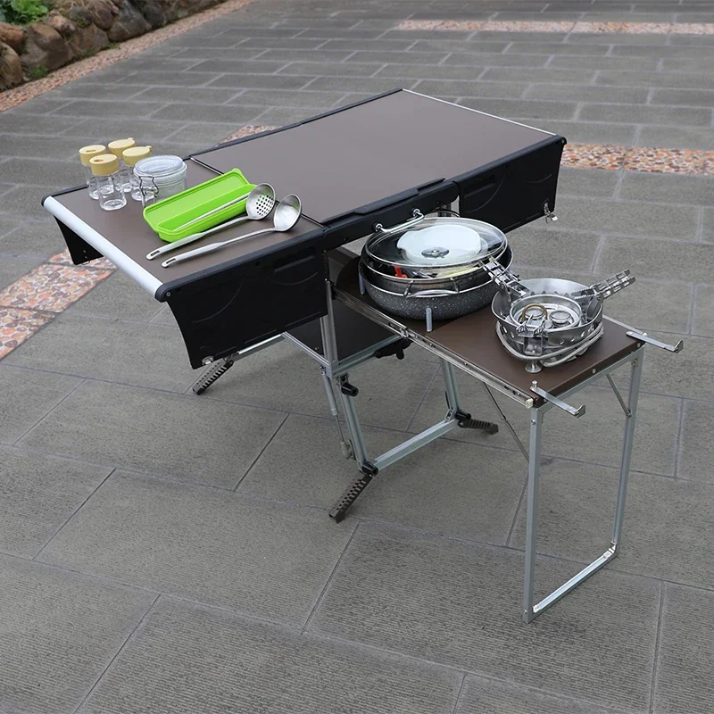
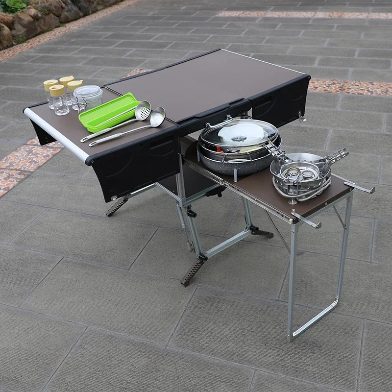

Bulin C550 Wohnmobilzubehör Mobile Küche Campingküche Wanderküche Reiseküche
Entfesseln Sie Ihren inneren Koch, wohin auch immer Ihr Abenteuer Sie führt – mit der mobilen Küche Bulin C550! Dieses kompakte und vielseitige Zubehör für Wohnmobile verwandelt jeden Außenbereich in eine voll funktionsfähige Kochoase. Ob Sie Nationalparks erkunden, mit dem Wohnmobil die Welt bereisen oder einfach nur einen Campingausflug im eigenen Garten genießen – mit der C550 bereiten Sie im Handumdrehen köstliche Mahlzeiten zu.
Robuste und leichte Konstruktion: Die Bulin C550 ist aus hochwertigen Materialien gefertigt und hält den Belastungen des Reisens problemlos stand. Dank seines leichten Designs ist es einfach zu transportieren und zu manövrieren und lässt sich mühelos auf- und abbauen.
- Großzügige Arbeitsfläche: Bereiten Sie Ihre Lieblingsgerichte mit viel Platz zum Schneiden, Rühren und Anrichten zu.
- Praktische Staufächer: Bewahren Sie Ihre Utensilien, Kochgeschirr und Zutaten ordentlich organisiert auf, um effizient kochen zu können.
- Verstellbare Klappbeine:
Die mobile Küche Bulin C550 ist der perfekte Begleiter für jeden Outdoor-Fan, der sich kulinarischen Komfort wünscht. Erleben Sie die Freude am Kochen, wo immer Sie sind – mit diesem innovativen Zubehör für Wohnmobile!
Die Bulin C550 Wohnmobil-Mobilküche ist eine kompakte und vielseitige Kochlösung, die für Outdoor-Enthusiasten, Camper und Wohnmobilisten entwickelt wurde. Sie zeichnet sich durch eine robuste Konstruktion, mehrere Fächer und wichtige Utensilien aus, die die Zubereitung von Mahlzeiten unterwegs komfortabel und angenehm machen.
- Faltbares Design: Die Bulin C550 lässt sich bei Nichtgebrauch einfach zusammenklappen und platzsparend verstauen.
- Mehrere Fächer: Bietet viel Platz für Kochgeschirr, Besteck, Lebensmittel und andere Campingutensilien.
- Robuste Materialien: Hergestellt aus hochwertigen Materialien, um den Anforderungen im Freien standzuhalten.
- Integriertes Schneidebrett: Eine integrierte Schneidebrettfläche bietet eine praktische Arbeitsfläche für die Zubereitung von Speisen.
- Aufbewahrung für Utensilien: Verfügt über separate Fächer zur Aufbewahrung wichtiger Kochutensilien, sodass diese ordentlich und griffbereit aufbewahrt werden können.
Die Bulin C550 Wohnmobil-Küche besticht durch ihr kompaktes Design und ist ideal für Wohnmobile, LKWs oder auch Wandertouren. Sie ist mit einer Reihe von Funktionen ausgestattet, die Ihr Outdoor-Kocherlebnis vereinfachen.
- Abmessungen: Kompakt und leicht für einfachen Transport.
- Material: Robuste Konstruktion, die den Bedingungen im Freien standhält.
Die mobile Wohnmobilküche Bulin C550 bietet Campern, Wohnmobilisten und Abenteurern zahlreiche Vorteile:
- Komfort: Das kompakte Design und die übersichtlichen Fächer machen die Zubereitung von Mahlzeiten zum Kinderspiel.
- Effizienz: Optimiert Ihren Kochprozess, indem alle notwendigen Utensilien und ausreichend Platz in einer tragbaren Einheit bereitgestellt werden.
- Langlebigkeit: Entwickelt, um den Belastungen im Freien standzuhalten und eine lange Lebensdauer zu gewährleisten.
Die mobile Wohnmobilküche Bulin C550 eignet sich perfekt für verschiedene Outdoor-Kochsituationen:
- Campingplätze:
- Wohnmobil Parks:
- Wanderungen:
- Picknicks
Einfach die mobile Küche aufklappen, Kochgeschirr und Utensilien bereitstellen und mit dem Kochen Ihrer Lieblingsgerichte beginnen. Dank des kompakten Designs ist auch das Aufräumen kinderleicht.